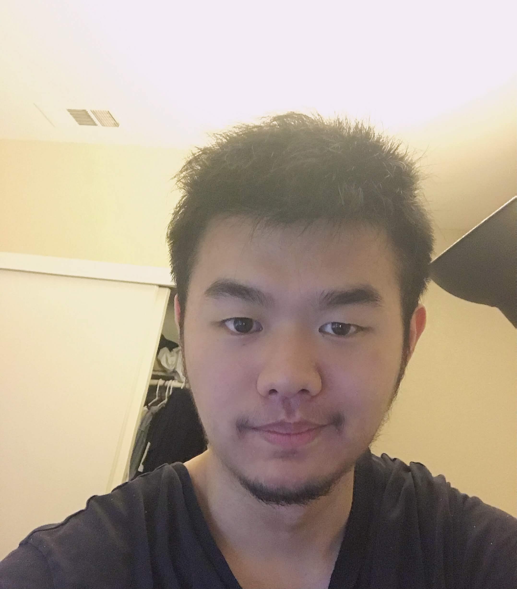

PERSONAL SPACE
A new space
This is a quiet place to collect ideas over time. Add whatever belongs here when you are ready.
WHY AM I DOING THIS?
我从小就在想：如果什么都不做、什么都不写，那么我或许只是这个世界上默默无闻的过客。我一直想做一个记录生活的网站，却可能因为拖延，也可能因为来自社会的压力，让这个想法一直空着。现在刚好有了时间，也有 AI 的帮助，我想从这里开始，写下自己的内心戏。
百年前，人们用油画、相机、日记与文学记录自己存在的证据。如今我们来到互联网时代，信息触手可及；我想借着这个时代，记录自己的生活、所获得的知识与经历，也写下对世界的感悟。
希望百年之后，未来的人仍能从这里得知：在二十一世纪初，曾有这样一个人，认真记录过日常琐事与内心所见。即使未来的世界进入更庞大的数据模型，我还是想留下属于自己的记录，让后辈知道我曾在这个世界出现过。
WHO AM I?
My name is Jie Wang (王杰). I was born in Fujian, mainland China, and immigrated to the United States at the age of ten. I spent my formative years in Brooklyn, New York, then moved to Boston for higher education before continuing my studies in California.
Today, California has been home for nearly a decade. Here I completed high school and earned my degree at UC Davis.

MY HOBBIES
我是一个喜欢尝试新鲜事物的人，什么都想亲自去体验。我的兴趣包括打游戏、听各式各样的音乐、玩乐器、运动、拍照，以及探讨悖论。
最近，我受到一位朋友的启发，开始迷上户外运动、徒步和爬山。这对我来说是一段很值得投入的体验：在探索世界的同时，也锻炼自己。
This page is intentionally open for future additions.